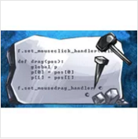
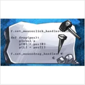

Asteroids
Interactive programming in Python
BACKGROUND
I wrote the Asteroids game for the "Interactive Programming in Python" class on Coursera.
Let's play the game!
How to play
Use left and right arrow keys to turn around. Use up arrow key to accelerate. Use space key to fire a missle.